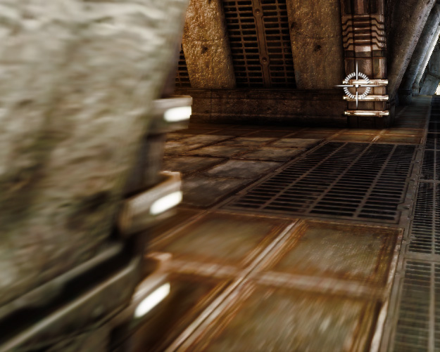

MotionBlur Post Process Effect
| |
Left: without motion blur
Right: with motion blur (and quick camera movement) |
Overview
Motion blur is a effect seen in still images and movies. In cameras the shutter is open for a short period of time to give light to the film media. Because of that fast moving objects appear blurred. In the human eye motion blur is perceived because the sensors in the human eye also have some reaction over time (the image fades over time). Motion blur is mostly visible in movie like frame rate (20 - 30) and on screen shots.
The motion blur post process we implemented features camera motion blur and object motion blur. For the object motion we generated a 2D velocity vector for each screen pixel. This information is updated each frame and stored in the intermediate velocity texture. A following half resolution post process uses this information to generate a half resolution motion blurred image. This is blended with the full resolution scene image to keep the image resolution high where needed. We generate the motion blurred image by averaging a few texture lookups. To avoid the appearance of multiple images (e.g. averaging 5 texture lookups can appear as 5 ghost images) we limit the maximum screen velocity. Doing motion blur in half resolution helps performance and also further hides using only a few texture lookups.
Further technical topics: MotionBlurSkinning MotionBlurSoftEdge
Implementation
As we properly add the two types of motions together we also can see the effect of reduced motion blur when the movements align (e.g. when the camera follows a moving object with similar speed). As the method only can operate with the provided scene image data not all effects can be reproduced. Motion blur is usually a very subtle effect so approximations often give good results.
For better performance we generate the motion blurred image in half resolution in a pre pass to the uber post processing pass. That also means we need to upscale the resulting image and we need to mask out the not motion blurred images where appropriate (very little image movement).
|  |
A forward moving player perceives motion blur mostly near the image corners.
You can see the full resolution image softly blends with half resolution motion blur image. |
For debugging purpose you can look at the blend mask with the "visualizetexture" command. The alpha channel is white where full resolution is uses and black where the half resolution buffer with the blurred content is:
Note that rotating the player view results in motion blur. That is expected but might be not what the player likes to see. Normally the eye would focus on some interesting points in the image and follow them.
For the eye the motion blur would disappear. In order to simulate this effect we would have to do proper eye tracking or simulate eye behavior (likely to fail in many cases). Alternatives: less motion blur, mask
the motion blur to affect mostly the outer areas of the screen, limit motion blur for critical game play cases, higher frame rate.
For camera motion blur the 2D motion vector can be computed on the fly way from the previous view matrix, the current view matrix and the pixel depth. For object motion blur we compute the vector per pixel by rendering the geometry of all motion blurred objects (small objects and slowly moving objects are culled for performance reasons) into the so called velocity texture. The data in this texture can be seen when using the VisualizeTexture console command:
| |
Left: Rotating blades as seen in the game.
Right: The same scene shown with the VisualizeTexture console command. |
The color in the velocity texture represents the motion vector direction and strength. The following image illustrates how the red and green channel is used to define a motion vector (the circle represents the max velocity):
| |
The color in the velocity texture indicates the object motion.
Black is reserved for camera/no object motion.
The blue and alpha channel might be used by the radial blur feature. |
We support all matrix transformations for rigid bodies like translation, rotation and scale. Later we added support for bone animation. As this method requires some special hardware features and has performance implications it is not enabled by default. More can be found here: MotionBlurSkinning
| |
| Motion blur skinning allows to have parts of the body moving in different directions. |
Directional blurring
Ideally we distribute the image content to pixels in the motion direction. A naive implementation of that would be very slow. We currently approximate it by a gather operation based on multiple bilinear filtered texture lookups. As we read a half resolution version of the scene texture we have good performance and even the motion appear smooth. For extreme motions the vector can be quite large. In order to avoid the effect of having multiple images the motion can be clamped in a 2D disc (see Max Velocity).
As we have an HDR image as input and do tone mapping after the motion blur we can see bright image content forming sharp lines. This is desirable as this effect can be seen with real cameras as well.
| |
| Bright objects (HDR content) appear brighter thanks to motion blur. |
The gather operation is fast and blurs image content in the motion direction but without further effort image content would leak into areas that are static and are in front of the moving object (e.g. the 3rd person player). To fix this we mask out those cases and only blur within the moving object. This alone however would appear incorrect as objects are blurry within but don't blur their content outside of the object borders. This can be solved by using the Motion Blur SoftEdge feature.
| |
| SoftEdge allows motion blur to appear outside of the moving object. |
The motion blur effect is combined with radial blur feature (similar to the radial blur in Photoshop when using the method zoom). Both effects share a lot of similarities and the combined method was done for efficiency. As both methods share one motion vector you might see some glitches when both effects are used extensively. Luckily those cases are very rare.
Tweaking the parameters
In the post processing chain you find the following properties in the uber post processing node (no need to use the motion blur node, the uber post process node is required for motion blur and bring the same settings):
The Max Velocity limits the motion in a disk with the specified size (scales with the screen width, always circular no matter what height). The value is a multiplier to some internal constant of a reasonable size. A number below 1 limits the vectors further, bigger than 1 allows stronger blur but as we keep the same sample count the result suffer (multiple images).
The Motion Blur Amount allows to scale the motion blur vectors. It's better to tweak this value first and leave the Max Velocity clamp higher otherwise you don't even see the change in the scale. You might end up with a high amount clamped very at a small radius. Even small motions will result in blurrring and the overall effect might be worse than having motion blur disabled.
The Full Motion Blur checkbox allows to disable camera motion blur. Object motion blur will still be active.
The Camera Rotation Threshold the maximum angle them camera can rotate at maximum until the camera motion blur is disabled (this is useful for camera cuts).
The Camera Translation Threshold the distance camera can move at maximum until the camera motion blur is disabled (again useful for camera cuts).
Note that the settings in the chain can be overwritten by post processing volumes.
In the Actor you can find the Motion Blur Scale. That value was once needed to disable motion blur on object that move with the camera (e.g. platforms). This is no longer needed as the motion blur now correctly handles such relative movements. The value will be removed soon or reactivated if we realize me miss some cases with the new implementation.
Interaction with motion blur
In real world bloom can be observed if large quantities of light are coming from the same direction (position on the screen). Motion blur can ditribute the quantity of a bright area to a bigger screen area. A recent change (10/28/2010) simulates the this effect.
| |
| Note that withe the new method the bloom appears dimmer and is more spread over the path of the moving object. |
The effect becomes visible with quickly moving objects or fast camera movement and the right settings (big max velocity, big motion blur amount, bloom threshold vs. object brightness MotionBlurSoftEdge). Then bright content that was blooming before is more spread out and this can also make the motion blur appearing less prominent.
Known limitations and issues
- Camera cuts like the ones done in Matinee are problematic for motion blur. We currently rely on the motion blur getting disabled with bigger camera rotations or translations. The threshold for both values can be use customized. Ideally Matinee would generate an event so there is one less point for a user error. However even if that gets fixed there might be others remaining (e.g. game code). Ideally we always move the camera and a jump or camera switch is handled differently. This is a bit more tricky to implement as the camera object is getting recreated each frame (per view).
- High high max velocity results in appears as multiple images (We tried to randomize this per pixel but the result wasn't good enough. More samples help at the cost of performance so we might add an option for that).
- Motion blur is based on half resolution scene input and renders to a half resolution texture that is getting upsampled in the uber post processing pass. That can be visible. Tweaking the masking might help (not exposed yet).
- For better editing experience we have motion blur disabled in the editor. This also affect the Radial blur.
Useful console commands
-
show postprocess - to enable/disable the postprocessing altogether
-
VisualizeTexture - to look at the intermediate buffers (e.g. half resolution motion blur input, velocity texture or the motion blur output)
-
MotionBlurMaxVelocity - to override the postprocess setting (for tweaking and debugging)
-
MotionBlurAmount - to override the postprocess setting (for tweaking and debugging)
-
MotionBlurSoftEdge - see MotionBlurSoftEdge
-
MotionBlurSkinning - see MotionBlurSkinning
-
set skeletalmeshcomponent bforcerefpose 1 - to disable skinning for the animated objects
-
slomo 0.1 - to slow down the world simulation (1 to set it back to the default value)
Important!
You are viewing documentation for the Unreal Development Kit (UDK).
If you are looking for the Unreal Engine 4 documentation, please visit the Unreal Engine 4 Documentation site.